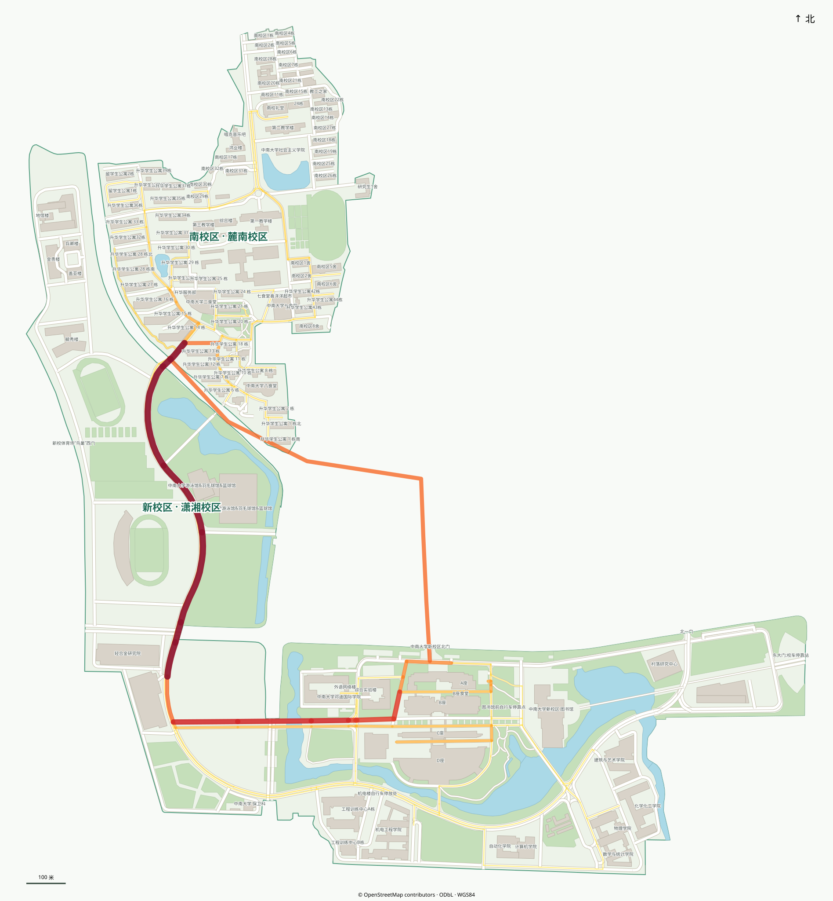

<!doctype html>
<html lang="zh-CN">
<meta charset="utf-8">
<meta name="viewport" content="width=device-width,initial-scale=1">
<title>中南大学课表通行热度</title>
<style>
*{box-sizing:border-box}body{margin:0;font:14px "Microsoft YaHei",sans-serif;color:#183744;background:#f4f7f4}header{height:78px;padding:15px 25px;background:#fff;border-bottom:1px solid #d9e4dc;display:flex;align-items:center;justify-content:space-between}h1{font-size:21px;margin:0 0 5px}header p{margin:0;color:#64756d;font-size:12px}header nav{display:flex;gap:6px}header nav button{border:1px solid #cbded3;background:#fff;color:#206c59;border-radius:7px;padding:8px 13px;cursor:pointer;font:inherit}header nav button.active{background:#e6f2ec;border-color:#8fc5ac;font-weight:600}main{height:calc(100vh - 78px);position:relative;overflow:hidden;background:#f8faf7}#map{width:100%;height:100%;display:block;object-fit:contain;transform-origin:center center;transition:transform .18s ease-out}#map3d{width:100%;height:100%;display:none;border:0;background:#101820}body.mode3d #map{display:none}body.mode3d #map3d{display:block}aside{position:absolute;z-index:2;top:18px;left:18px;width:310px;max-height:calc(100% - 36px);overflow:auto;padding:16px;background:#fffffff2;border:1px solid #d6e2d8;border-radius:12px;box-shadow:0 10px 28px #183a2812}h2{font-size:14px;margin:0 0 10px}.grid{display:grid;grid-template-columns:1fr 1fr;gap:7px;margin-bottom:14px}.metric{padding:8px;background:#f3f8f4;border-radius:7px}.metric b{display:block;font-size:18px;color:#167052}.metric span{font-size:11px;color:#5b7065}.legend{font-size:12px;line-height:1.75;border-top:1px solid #dce7df;padding-top:11px}.scale{height:10px;border-radius:8px;background:linear-gradient(90deg,#ffe648,#ffc62d,#ff9626,#f55b23,#d22626,#8e142c);margin:6px 0}.note{font-size:11px;color:#60736a;line-height:1.55;margin:8px 0 0}table{width:100%;border-collapse:collapse;font-size:11px;margin-top:8px}th{text-align:left;color:#688077;font-weight:600}td,th{padding:5px 2px;border-bottom:1px solid #eef2ef}td:nth-child(2),td:nth-child(3){text-align:right;white-space:nowrap}@media(max-width:700px){header{height:72px;padding:11px 14px}main{height:calc(100vh - 72px)}aside{width:260px;top:10px;left:10px;padding:12px}.metric b{font-size:16px}}
</style>
<header><div><h1>中南大学课表通行热度</h1><p>新校区与南校区 · 2026–2027 学年第一学期模拟</p></div><nav><button id="show2d" class="active">2D</button><button id="show3d">3D</button></nav></header>
<main id="stage">
  
  <iframe id="map3d" src="map-3d.html#embedded" title="中南大学三维道路热度地图"></iframe>
  <aside>
    <h2>模拟结果</h2>
    <div class="grid" id="metrics"></div>
    <div class="legend"><b>道路热度</b><div class="scale"></div><div>低（黄）→ 中（橙）→ 高（红）；每一条有通行量的路段均直接上色。</div><p class="note">滚轮可放大或缩小地图，双击空白处重置视图。你标注的替代走廊 U001 已加入：经过原主通道 E418 的流量，50% 按该走廊分流。E019 过街天桥仅供行人，未计入车辆路线。</p></div>
    <h2 style="margin-top:15px">占用最高路段</h2><table><thead><tr><th>路段</th><th>学期人次</th><th>峰值</th></tr></thead><tbody id="top"></tbody></table>
    <p class="note" id="scope"></p>
  </aside>
</main>
<script src="traffic-flow.js"></script>
<script>
(()=>{const flow=window.CSU_TRAFFIC_FLOW,map=document.getElementById('map'),stage=document.getElementById('stage'),n=new Intl.NumberFormat('zh-CN');let zoom=1;const metric=(v,l)=>`<div class="metric"><b>${n.format(v)}</b><span>${l}</span></div>`;const s=flow.summary;document.getElementById('metrics').innerHTML=metric(s.modelled_classes,'纳入模拟班级')+metric(s.included_locations,'纳入地点')+metric(s.student_movements,'学期学生移动人次')+metric(s.roads_with_flow,'有通行量道路');document.getElementById('scope').textContent=`已纳入 ${n.format(s.included_events)} 条可定位排课；${n.format(s.excluded_events)} 条铁道、湘雅、无教室或无法可靠定位的记录未计入。`;document.getElementById('top').innerHTML=flow.top_edges.slice(0,10).map(e=>`<tr><td>${e.id}${e.name==='未命名道路'?'':` · ${e.name}`}</td><td>${n.format(e.semester_person_trips)}</td><td>${n.format(e.peak_slot_person_trips)}</td></tr>`).join('');const apply=()=>map.style.transform=`scale(${zoom})`;stage.addEventListener('wheel',e=>{if(e.target.closest('aside'))return;e.preventDefault();zoom=Math.max(.8,Math.min(4,zoom*(e.deltaY<0?1.18:.85)));apply()},{passive:false});stage.addEventListener('dblclick',e=>{if(e.target.closest('aside'))return;zoom=1;apply()});const setMode=mode=>{document.body.classList.toggle('mode3d',mode==='3d');document.getElementById('show2d').classList.toggle('active',mode==='2d');document.getElementById('show3d').classList.toggle('active',mode==='3d')};document.getElementById('show2d').onclick=()=>setMode('2d');document.getElementById('show3d').onclick=()=>setMode('3d')})();
</script>
</html>
